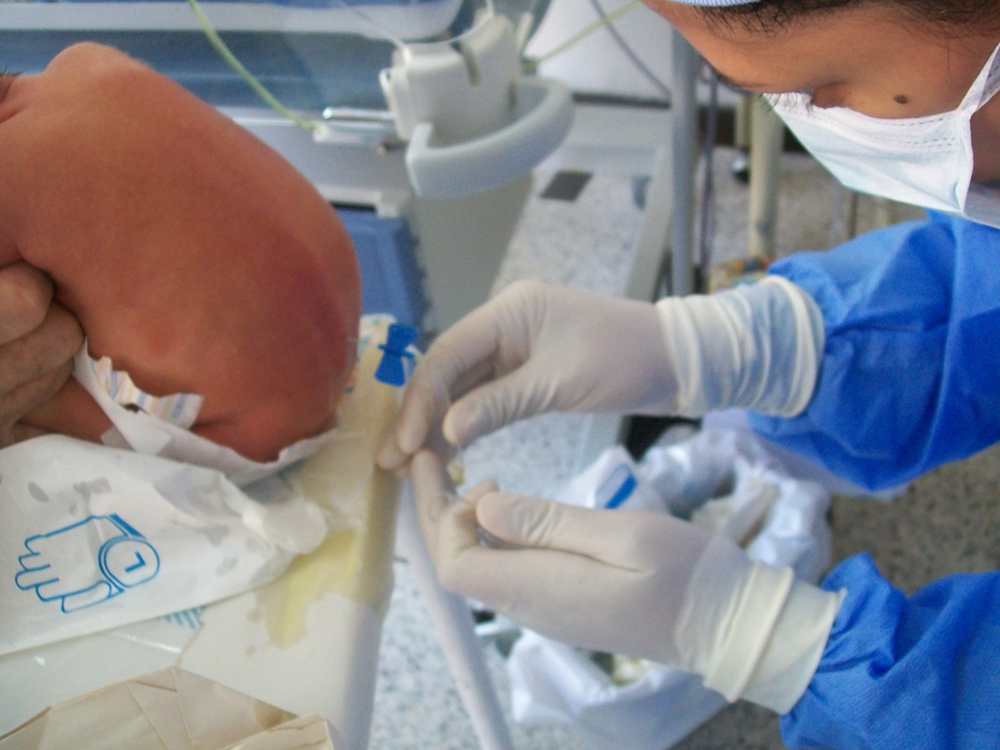

Sábado: amigdalite e amoxicilina. Terceiro dia: ainda febril e faz crise. Por que a punção entra no jogo mesmo com faixa etária "compatível"?
Indicações nucleares de punção lombar
1. Idade < 6 meses. Por definição, abaixo de 6 meses já não é crise febril (faixa 6–60 meses). Pegadinha: menos de 6 meses + febre + crise = meningite até prova em contrário (atípica/suspeita forte).
2. Dúvida. Estar em dúvida obriga a correr atrás para tirar a dúvida — na porta, quem tira a dúvida é a punção lombar.
3. Considerar PL entre 6 e 12 meses em crianças não vacinadas para Haemophilus influenzae tipo B ou pneumococo. Nessa faixa, a PL não é obrigatória automática, mas a situação pede pensar um pouco melhor (epidemiologia, contexto).
4. Antibiótico em curso — indicação forte e confusa na prática.
🩺 Checklist PL · 4 eixos (toque para marcar)
Idade < 6 mesesjá não é CF por definição — meningite até prova em contrário
Dúvida clínicaestar em dúvida obriga a correr atrás — PL tira a dúvida
Considerar 6–12 m sem vacina Hib/pneumococonão é automático — pensar melhor pela epidemiologia
Antibiótico em usorisco de meningite mascarada → puncionar a dúvida
O caso do antibiótico que mascara
Sábado: criança com febre e dor de garganta; orofaringe um pouco hiperemiada; conduta comum de porta — rótulo de amigdalite e amoxicilina. No terceiro dia de antibiótico, a criança mantém febre e faz crise na vigência da febre.
Ainda pode ser crise febril — embora não seja o padrão ficar distante do início da febre. A faixa etária pode ser compatível — isso sozinho não fecha.
O uso de antibiótico muda o jogo: se houver meningite bacteriana, o antibiótico pode diminuir a carga bacteriana e tornar o quadro atípico. No quadro mascarado, às vezes não há rigidez de nuca, não há cefaleia — só a crise.
⏱️ Timeline D0 → D3 → PL
D0 · sábadofebre + dor de garganta → amigdalite → amoxicilina
D3 · crisemantém febre + faz crise na vigência da febre
mascarasem rigidez · sem cefaleia · às vezes só a crise
PLdúvida → puncione · o ATB não esteriliza o SNC
⚡ Pegadinha de prova
Antibiótico pode mascarar manifestações de meningite bacteriana → dúvida → punção.

Punção lombar pediátrica em recém-nascido — posição lateral fletida e ato do procedimento. A dúvida seletiva (clássica × mascarada por ATB) e a indicação de PL são do texto soberano. Lumbar puncture procedure in a newborn infant · foto de Bobjgalindo (Hospital Central de Maracay, Venezuela), via Wikimedia Commons · CC BY-SA 4.0 · Fonte: commons.wikimedia.org/wiki/File:Spinal_tap_newborn.JPG · A foto não afirma indicação universal de PL; o critério é seletivo.
📌 Resumo operacional
PL seletiva · <6 m = meningite até prova contrária · ATB mascara → puncione a dúvida.
🧩 Revisão ativa
Por que <6 m não é "CF com PL", e sim "não-CF"?
O que o ATB tira do exame físico meníngeo?
Quando 6–12 m não vacinada ainda não obriga PL automática?
🧠 Quiz
Q1. Lactente de 4 meses, febre e crise. Conduta conceitual correta?
Q2. Criança de 2 anos no D3 de amoxicilina, ainda febril, faz crise. Assinale a correta: